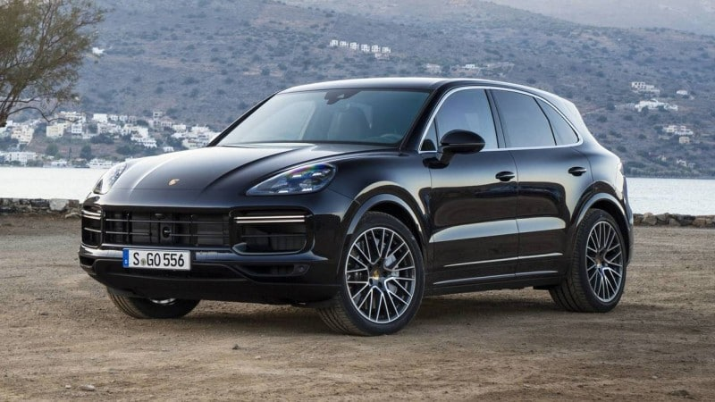

BMW X5 |
|
| More DETAILS-BMW |
The BMW X5 is a mid-size, rear-wheel drive luxury SUV produced by BMW. The X5 made its debut in 1999. It was BMW's first SUV and it also featured all-wheel drive and was available with either manual or automatic transmission. In 2006, the second generation X5 was launched, known internally as the E70, featuring the torque-split capable xDrive all-wheel drive system mated to an automatic transmission, and in 2009 the X5 M performance variant was released as a 2010 model. |
Porsche Cayenne |
|
|  More DETAILS-Porsche |
Ferdinand Porsche founded the company called "Dr. Ing. h. c. F. Porsche GmbH" in 1931, with main offices at Kronenstraße 24 in the centre of Stuttgart. Initially, the company offered motor vehicle development work and consulting, but did not build any cars under its own name. One of the first assignments the new company received was from the German government to design a car for the people, that is a "Volkswagen". This resulted in the Volkswagen Beetle, one of the most successful car designs of all time. The Porsche 64 was developed in 1939 using many components from the Beetle |